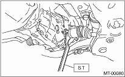

1. Disconnect the ground cable from the battery.
2. Lift-up the vehicle, and remove the front wheels.
3. Drain the transmission gear oil. (MT model)
4. Drain the differential gear oil. (AT model)
5. Disconnect the connector of the front vehicle height sensor. (HID model, right side only)

6. Remove the nuts that hold the front transverse link and the front vehicle height sensor bracket. (HID model, right side only)

7. Remove bolt (A) and clip (B) fixing the front crossmember and the front vehicle height sensor bracket, then remove the front vehicle height sensor assembly. (HID model, right side only)

8. Lift the crimped section of axle nut.

9. Depress the brake pedal and remove the axle nut using a socket wrench.
CAUTION:
Remove the axle nut while there is no load being applied to the axle. Failure to do so may damage the wheel bearings.
10. Remove the front stabilizer link from the transverse link.
11. Remove the bolts which secure the ball joint. Remove the transverse link from the front housing.

12. Pull out the front drive shaft from the front axle. If it is hard to remove, use ST1 and ST2.
| ST1 926470000 | AXLE SHAFT PULLER |
| ST2 28099PA110 | AXLE SHAFT PULLER PLATE |
CAUTION:
• When removing the drive shaft, do not hammer the shaft.
• Do not let the oil seal or tone wheel be damaged.
• When replacing the front drive shaft, also replace the inner oil seal.

13. Using the ST, remove the front drive shaft from the transmission.
| ST 28399SA000 | DRIVE SHAFT REMOVER |
NOTE:
• The direction of the ST differs by type of the transmission to be installed.
• For an AT model, use ST with the “AT” stamped side facing the transmission side. For an MT model, use the ST with the “MT” stamped side ST facing the transmission.
CAUTION:
Be careful not to allow the ST to contact the holder area.
